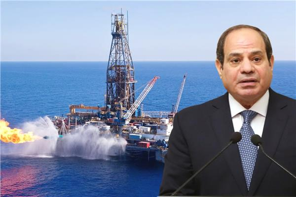
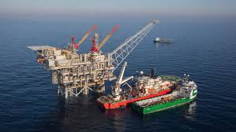
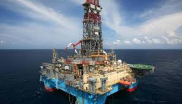
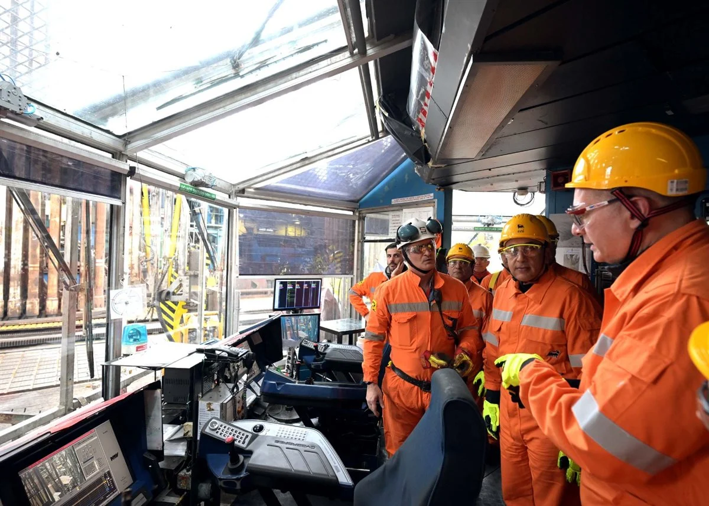
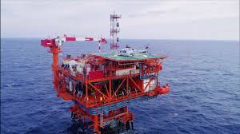
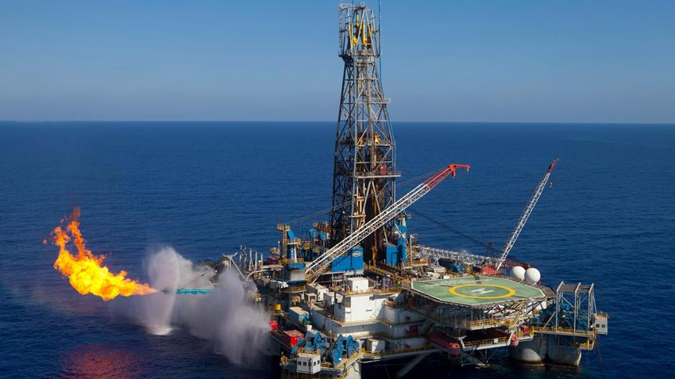

إنجازات الرئيس السيسي في تنفيذ المشروع
سرعة غير مسبوقة في التنفيذ والإنتاج
تم تنفيذ المشروع في زمن قياسي عالمي، حيث استغرق أقل من 28 شهرًا منذ الاكتشاف حتى بدء الإنتاج، وهو معدل أسرع بكثير مقارنة بالمشروعات المماثلة التي تستغرق من 6 إلى 8 سنوات

تحقيق الاكتفاء الذاتي من الغاز الطبيعي
بفضل إنتاج حقل ظهر، استطاعت مصر تحقيق الاكتفاء الذاتي من الغاز الطبيعي بحلول عام 2018، مما أدى إلى وقف استيراد الغاز المسال وتوفير 2.5 مليار دولار سنويًا من فاتورة الاستيراد

زيادة الطاقة الإنتاجية للحقل
بدأ الحقل بإنتاج 350 مليون قدم مكعب يوميًا في ديسمبر 2017، ومع التوسع المستمر، وصلت طاقته الإنتاجية إلى 3.2 مليار قدم مكعب يوميًا في عام 2020، مما يعزز قدرات مصر على التصدير للأسواق العالمية.

جذب الاستثمارات الأجنبية وتعزيز الشراكات الدولية
ساهم نجاح مشروع حقل ظهر في جذب استثمارات أجنبية ضخمة، حيث تجاوزت 10 مليارات دولار، وفتح المجال لشراكات استراتيجية مع شركات عالمية مثل إيني، وبي بي، وروزنفت الروسية، مما عزز مكانة مصر كمركز جاذب للاستثمار في قطاع الطاقة.

تحويل مصر إلى مركز إقليمي للطاقة
ساعد الحقل في تحويل مصر إلى محور إقليمي لتداول الغاز، حيث أصبحت مصر قادرة على تسييل الغاز وتصديره إلى أوروبا والأسواق العالمية، مما جعلها لاعبًا أساسيًا في سوق الطاقة العالمي.

تطوير البنية التحتية لقطاع الطاقة
رافق المشروع تطوير محطات معالجة الغاز، وشبكات الأنابيب، وموانئ التصدير، مما دعم منظومة الطاقة في مصر وساهم في تعزيز قدرات شبكة الكهرباء القومية، والاعتماد على الغاز كمصدر نظيف ومستدام للطاقة.
